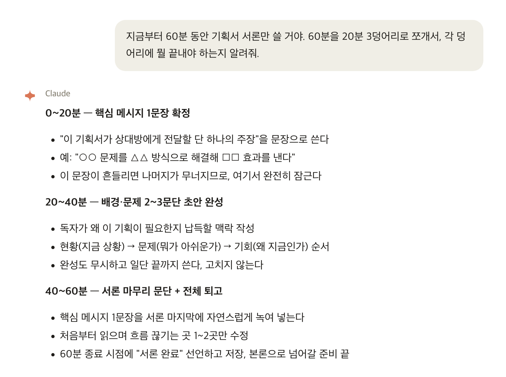
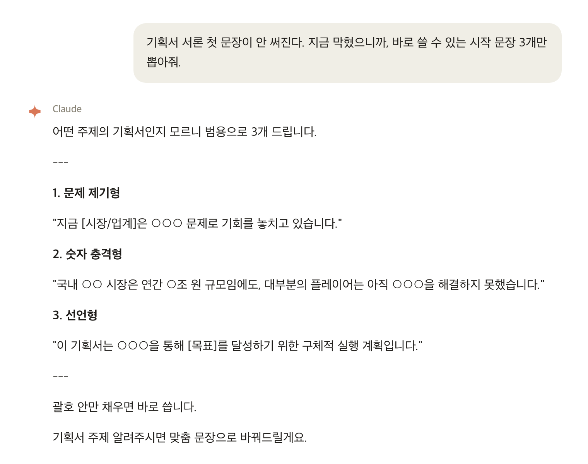

Claude한테 실제로 던지는 프롬프트 5개, 이 글에서 그대로 가져가세요. 팔로우도 DM도 필요 없습니다.
기획서 마감은 내일 오전이다. 오전에 메일 10통 답장하고, 점심 먹고 돌아왔더니 벌써 2시. 이제 본격적으로 해야지 싶어서 앉았는데 — 화면만 멀뚱히 본다. 10분 지나서 커피 한 잔 더 타러 간다. 돌아와서 SNS 잠깐 본다. 다시 화면. 어느새 4시다. 이런 날, 한 번쯤은 있었을 거다.
집중이 안 되는 건 의지력 문제가 아니다. 사실 뇌가 방해를 너무 많이 받는 구조로 하루가 짜여 있어서 그렇다. 카카오톡 알림, 메일, 갑자기 들어오는 슬랙 메시지 — 이게 하루에 수십 번씩 끊긴다. 한 번 흐름이 끊기면 다시 집중하는 데 평균 23분 걸린다. 즉, 오전에 알림 3번 받으면 그날 오전은 사실상 끝난 거다.
그리고 솔직히, "집중해야지"라고 마음만 먹는다고 되지 않는다. 뭘 먼저 할지 정해져 있지 않으면 그냥 쉬운 것부터 하게 된다. 메일 답장, 정산 확인, 파일 정리 — 다 했는데 정작 중요한 건 손도 못 댔다. 이게 매일 반복된다.
1인 사업자나 프리랜서는 더 힘들다. 시간을 쪼개줄 팀장도 없고, 마감을 잡아줄 동료도 없다. 스스로 안 하면 아무도 안 한다. 그래서 오히려 더 어렵다.
혼자 할 때 vs Claude를 옆에 두고 할 때
| 상황 | 혼자 할 때 | Claude 쓸 때 |
|---|---|---|
| 시작 | 뭐부터 할지 10분 고민 | 할 일 던지면 1개 즉시 지정 |
| 막혔을 때 | 멍 때리다 SNS로 이탈 | 30초 안에 실마리 받고 계속 |
| 마무리 | 뭐 했는지 기억 안 남 | 한 줄 리뷰로 성과 기록 |
| 다음 날 | 아침에 또 10분 고민 | 전날 첫 할 일이 정해져 있음 |
아래 박스 안 글자를 드래그해서 그대로 복사해 Claude에 붙여 넣으면 됩니다. 대괄호 [ ] 부분만 회원님 상황으로 바꾸세요.
할 일 목록을 툭 던지면 Claude가 "오늘 집중할 1개"를 짚어준다. 고르는 시간 0분.
선언 자체가 뇌를 켠다. 이상하게 들려도 실제로 된다.

빈 화면 보며 멍 때리는 시간이 없어진다.

쌓이면 내가 뭘 하는 사람인지 스스로 보인다.
다음 날 아침, 뭘 할지 고민하는 10분이 사라진다.
첫째, 선택지를 없애준다. 집중을 방해하는 가장 큰 원인 중 하나가 "지금 이게 맞나?" 하는 의심이다. Claude가 할 일 1개를 정해주면, 그냥 그것만 하면 된다. 의심이 줄면 손이 움직인다.
둘째, 막히는 순간을 짧게 끊어준다. 보통 집중이 깨지는 건 어려운 부분에서 멈추고 딴 데로 눈이 가서다. Claude에 던지면 30초 안에 실마리가 나온다. 흐름이 끊기지 않는다. 그게 60분을 버티게 한다.
무료 자료 · 게이트 없음
인스타 팔로우, DM, 이메일 입력 — 아무것도 필요 없습니다. 위 5단계 프롬프트를 한 곳에 모았어요. 아래 박스를 통째로 드래그해서 메모장에 붙여 두고, 매일 1시간 집중할 때 꺼내 쓰세요.
＋ 1시간 집중 체크리스트
⬇ 프롬프트 팩 텍스트로 받기 복사가 귀찮으면 파일로 받아 두세요
오늘 오후, 위 프롬프트 5개로 60분 딱 한 번만 써보세요. 1단계를 영상으로 천천히 따라 하고 싶으면 첫 강의 하나만 보면 됩니다. → deepwork-1hr 첫 강의 보러 가기